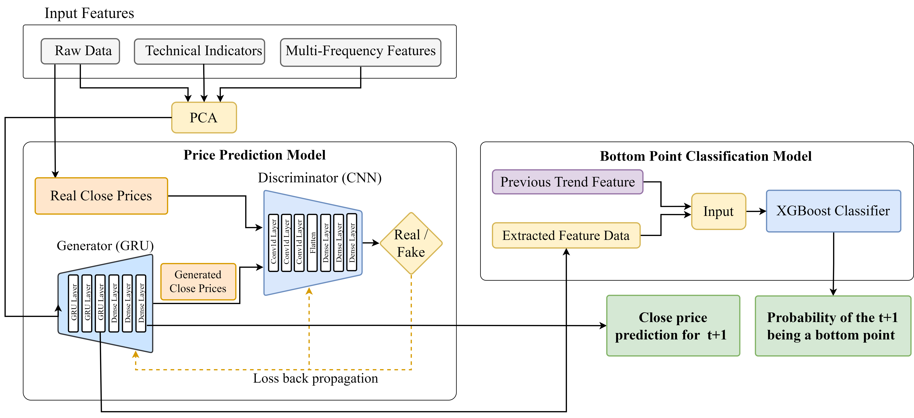
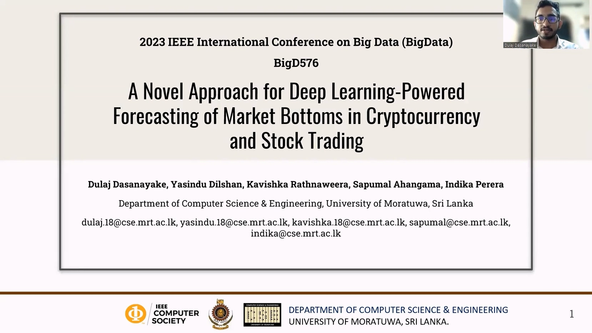
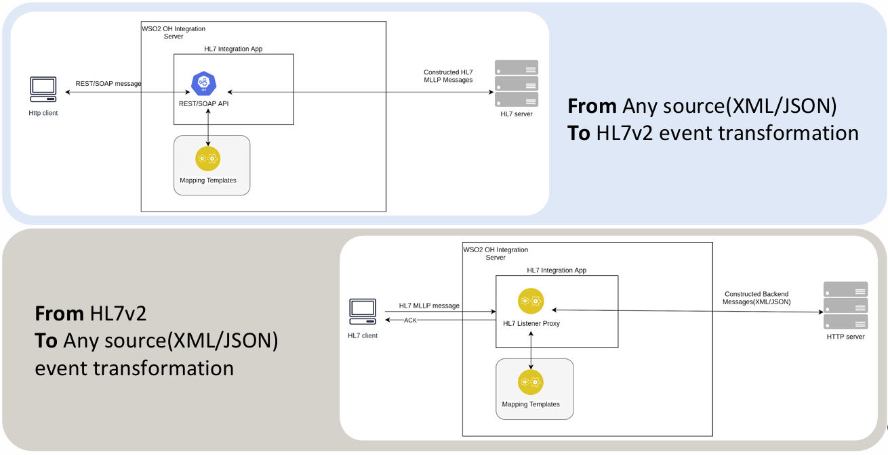

I have actively pursued research in applied machine learning and healthcare informatics, driven by the goal of building intelligent, interpretable systems. Here are some of the notable research contributions I have made.
Extension on Final Year Research & Development Project
This work extends the prior bottom-turning-point research to market top (exit) prediction. It proposes a hybrid pipeline that unifies WGAN-GP multi-step price forecasting, Elliott-inspired neural wave-shape recognition, and an XGBoost top-point classifier with dual-scale labeling. The approach improves F1 and simulated profit capture across U.S. stocks (AAPL, TSLA, SBUX) and cryptocurrencies (BTC, ETH, LTC).
Dulaj Dasanayake, Jalitha Kalsara, Madara Gunarathna, Chan Mahaarachchi, Sapumal Ahangama, Indika Perera.
“Hybrid Machine Learning for Strategic Market Exit Forecasting: Adversarial Modeling and Supervised Classification.”
Accepted for presentation at The 8th International Conference on Information and Communications Technology (ICOIACT) 2025, 4–5 December 2025, Yogyakarta, Indonesia. Proceedings (to appear).
Final Year Research & Development Project
Proposed a novel approach for forecasting market turning points using deep learning. The solution combines a WGAN-GP model with Gated Recurrent Units (GRUs) for time series representation learning, and an XGBoost classifier for bottom point identification using latent features. The model was tested across cryptocurrency and stock markets, outperforming standard LSTM/GRU/GAN baselines.

Architecture of the GAN-GRU-based forecasting framework
D.M.D.K. Dasanayake, H.Y. Dilshan, H.D.K.Y. Rathnaweera, Sapumal Ahangama, Indika Perera.
“A Novel Approach for Deep Learning-Powered Forecasting of Market Bottoms in Cryptocurrency and Stock Trading”,
Proceedings of the 2023 IEEE International Conference on Big Data, Sorento, Italy.

Independent Research Project at WSO2
Designed and implemented a lightweight mapping engine for the HL7v2 messaging standard, supporting healthcare data transformation into JSON and XML formats. The accelerator leverages YAML templates and integrates with WSO2 EI to enable real-time interoperability across clinical systems.

System architecture of the HL7v2 transformation pipeline